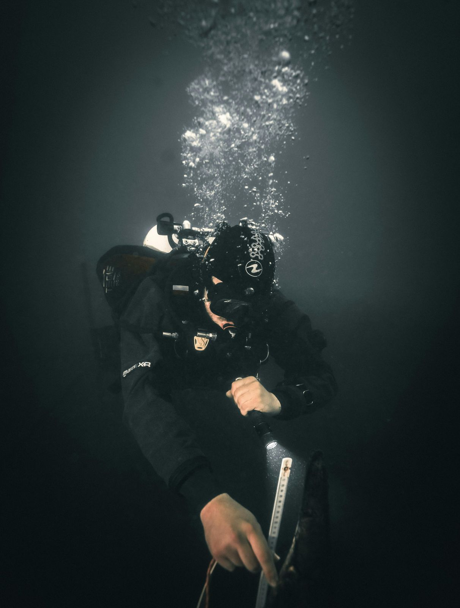
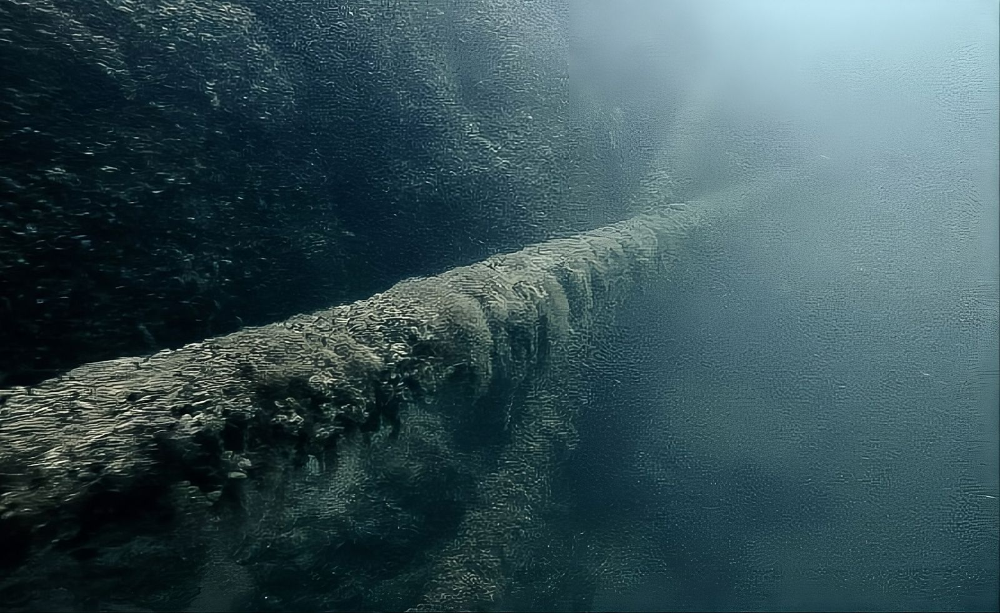
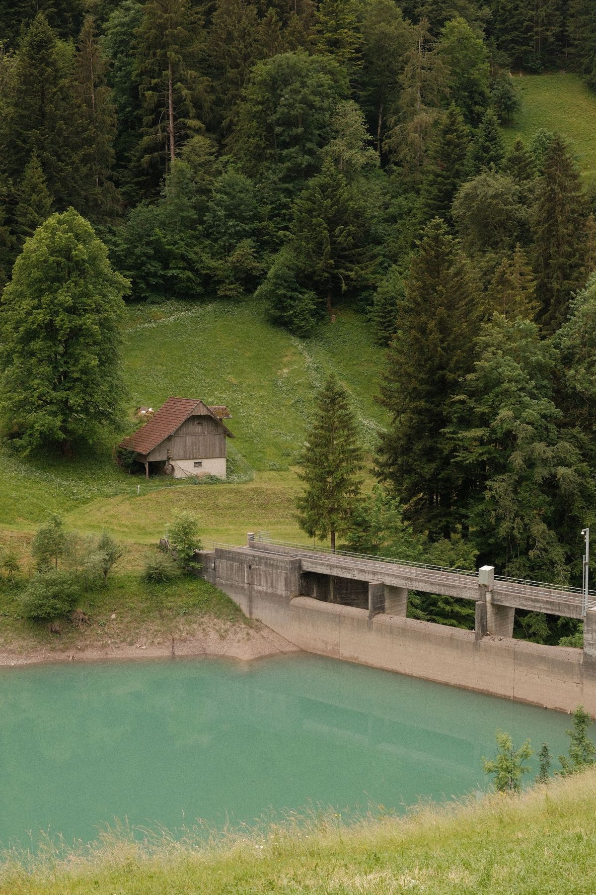

Wissen, in welchem Zustand Ihr Bauwerk unter Wasser ist.
Systematische Kontrolle von Wasserbauten, Leitungen und Anlagen. Mit einem Befund, der fachlich beschreibt, was wir gesehen und gemessen haben.
Was unter Wasser liegt, sieht man nicht. Wir schon.
Viele Bauwerke und Anlagen stehen zu einem grossen Teil unter Wasser: Brückenpfeiler, Ufermauern, Seewasserfassungen, Leitungen und Kabel. Auskolkungen, Risse, Korrosion, Bewuchs oder Verlagerungen bleiben dort lange unbemerkt, bis ein Schaden entsteht.
Eine Inspektion zeigt frühzeitig, wo Handlungsbedarf besteht. Sie ist Grundlage für Unterhaltsplanung, Sanierungsprojekte, Budgetanträge und die Erfüllung von Kontrollpflichten.
Wir arbeiten nach einem vorab vereinbarten Prüfprogramm. So ist nachvollziehbar, was kontrolliert wurde, und die Ergebnisse lassen sich bei der nächsten Inspektion vergleichen.

Typische Objekte
- Brückenpfeiler, Widerlager und Fundamente
- Ufermauern, Kaimauern, Spundwände und Stege
- Wehre, Schützen, Einlauf- und Auslaufbauwerke
- Seewasserfassungen, Rechen und Siebe
- Druck- und Abwasserleitungen, Seekabel
- Becken und Einbauten in Bädern und Anlagen
- Bojen, Verankerungen, Hafen- und Steganlagen
Prüfumfang nach Ihrem Bedarf
Sichtprüfung
Flächige Kontrolle auf Risse, Abplatzungen, Auswaschungen, Korrosion, Fremdkörper und Beschädigungen.
Masse und Lage
Aufnahme von Schadstellen mit Massangaben, Tiefen und Positionen, damit sie wiedergefunden werden.
Kolk und Sohle
Kontrolle von Unterspülungen und Veränderungen der Gewässersohle rund um Fundamente und Pfeiler.
Bewuchs
Beurteilung von Muschel- und Pflanzenbewuchs, zum Beispiel durch die Quaggamuschel an Fassungen und Leitungen.
Leitungen und Kabel
Verlauf, Überdeckung, Freilage, Halterungen und sichtbare Schäden entlang der Trasse.
Funktion
Zustand von beweglichen Teilen wie Klappen, Schützen und Verschlüssen, soweit ohne Demontage möglich.

Wehre, Fassungen und Ufer: Der kritische Teil liegt unter Wasser.
Von der Anfrage bis zum Befund
- UnterlagenPläne, frühere Berichte und bekannte Probleme sichten.
- PrüfprogrammUmfang, Abschnitte und Prüfpunkte gemeinsam festlegen.
- EinsatzTauchgänge mit Sicherung, Kamera und Positionsbezug.
- AuswertungBilder sichten, Befunde ordnen und beschreiben.
- BerichtBefund, Fotodokumentation, Video und Empfehlung.
Was Sie erhalten
- Schriftlicher InspektionsberichtBefund je Prüfpunkt, Zustandsbeschreibung und Hinweise auf Handlungsbedarf.
- FotodokumentationBeschriftete Fotos mit Position und Tiefe.
- VideoaufnahmenDurchgehende Aufnahmen der geprüften Abschnitte als Beleg.
- LageangabenGPS-Positionen über Oberflächenmarkierung, wo verlangt.
Einsatzbedingungen
- TiefeStandard bis 40 m, tiefer nach schriftlicher Vereinbarung
- SichtAuch bei schlechter Sicht, dann mit tastender Prüfung und Nahaufnahmen
- GewässerSeen, Flüsse, Kanäle, Becken, Werk- und Industrieanlagen
- IntervallEinmalig oder als wiederkehrende Kontrolle
Eine Tauchinspektion ersetzt keine statische Beurteilung. Wo nötig, liefern wir die Grundlagen für Ihr Ingenieurbüro und stimmen den Prüfumfang mit diesem ab.
Inspektion planen
Senden Sie uns Objekt, Lage und vorhandene Pläne. Wir schlagen einen Prüfumfang vor.